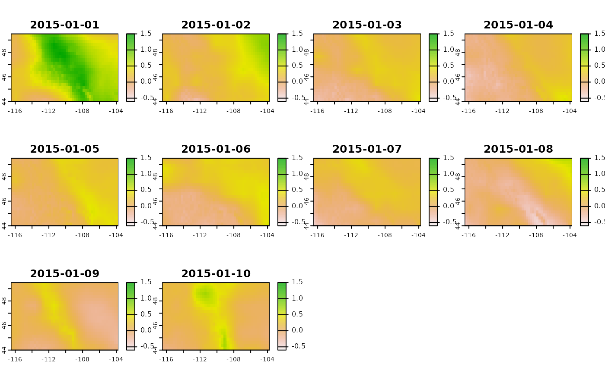

Using ETo on Raster Data
cmip6-eto.RmdAs shown in the README, ETo works with
terra::rast objects out-of-the-box. In this example, the downscaled
CMIP6 data for Montana that are provided with the package are used
to calculate and compare different ETo methods:
library(ETo)
# Load data. Need to read with terra::rast to unpack to a rast.
srad <- terra::rast(ETo::srad) |> terra::subset(1:10)
tmean <- terra::rast(ETo::tmean) |> terra::subset(1:10)
# Convert from K to C
tmean <- tmean - 273.15
tmax <- terra::rast(ETo::tmax) |> terra::subset(1:10)
# Convert from K to C
tmax <- tmax - 273.15
tmin <- terra::rast(ETo::tmin) |> terra::subset(1:10)
# Convert from K to C
tmin <- tmin - 273.15
rh <- terra::rast(ETo::rh) |> terra::subset(1:10)
ws <- terra::rast(ETo::ws) |> terra::subset(1:10)
# Get a raster grid of elevation for the domain.
elev <- get_elev_from_raster(tmean, z = 3)
#> Mosaicing & Projecting
# Create a raster grid where each layer gives the julian day
days <- get_days_from_raster(tmean)
# Create a terra::rast of latitude
lat <- get_lat_from_raster(tmean)
# Calculate timeseries of Penman Montieth
penman <- etr_penman_monteith(
t_mean = NULL, t_max = tmax, t_min = tmin, srad = srad,
rh = rh, rh_min = NULL, rh_max = NULL, ws = ws,
days=days, lat=lat, reference = 0.23, elev = elev
)If you don’t want to create the elevation, day of year, and latitude
grids yourself, you can also use the calc_etr_spatial()
function, and it will handle all of that for you:
# Calculate timeseries of Hargreaves
hargreaves <- calc_etr_spatial(
t_mean = tmean, t_max = tmax, t_min = tmin, method = "hargreaves", z = 3
)
#> Mosaicing & ProjectingNow that we have calculated ETo, we can look at the difference between the two methods:
diff <- penman - hargreaves
# Plot the difference (in mm) between the two methods.
terra::plot(diff, range = c(-0.6, 1.5))